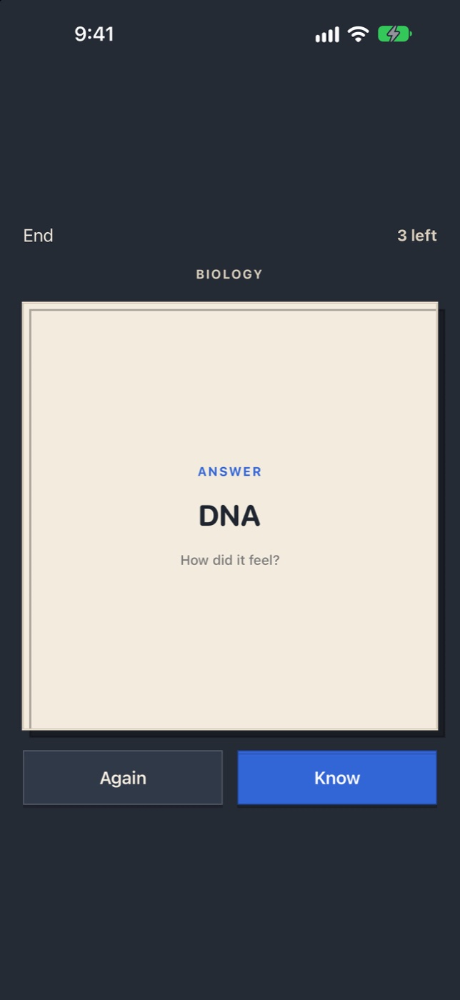
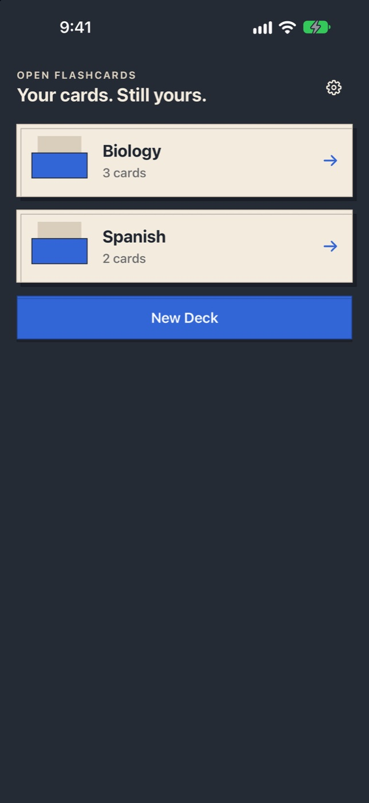
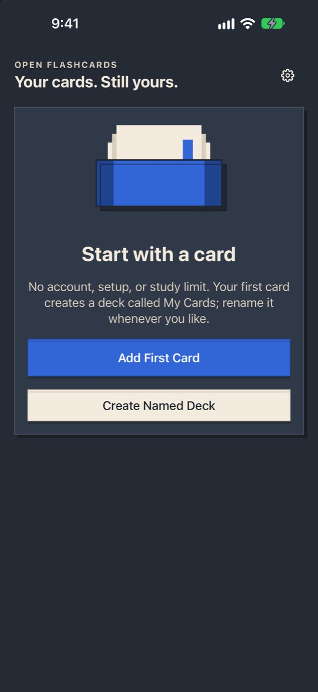

“The app glitched and deleted them all.”
Flashcards Maker Flash Cards on the App Store
What Open Flashcards does instead
Saves every edit locally and keeps a previous-good snapshot for recovery.
Open AppCo app #6
Make cards. Keep them exact. Study without limits.
Apple is reviewing version 1.0.0 (build 1).
The actual app



35-second device check
This is the submitted build: launch, resume an interrupted study session, reveal, mark the card known, and finish.
Why this app exists
“The app glitched and deleted them all.”
Flashcards Maker Flash Cards on the App Store
Saves every edit locally and keeps a previous-good snapshot for recovery.
“AI changing the content.”
Keeps the exact text you type or import. There is no AI rewriting path.
“Keeps rejecting my CSV files.”
Imports and exports ordinary CSV, preserving quoted commas, quotation marks and line breaks.
“A limit on how many cards you can use.”
Includes unlimited cards and unrestricted study for free. No ads, subscription or unlock.
“Finish a whole deck before it logs your progress.”
Restores the same study queue, prompt side and remaining count after interruption or relaunch.
“You can’t shuffle the cards.”
Flashcards with Cram on the App Store
Lets you study in original or shuffled order, with fronts or backs as prompts.
“Forced to create a deck before I create a card.”
Flashcard Hero on the App Store
Starts the first card immediately in My Cards, while still supporting named decks.
On October 11, 2026, we captured 6,978 unique public review entries across 14 source apps; 2,231 were rated one to three stars. The audit requested pages 1–10 of Apple's most-recent and most-helpful feeds in the United States, Canada, Great Britain and Australia. All 400 requested feed snapshots succeeded.
Apple caps these public feeds at ten pages. Two source apps filled page 10, so older reviews may exist beyond what Apple exposed. This is every verified complaint category Open Flashcards claims to address—not every review ever written.